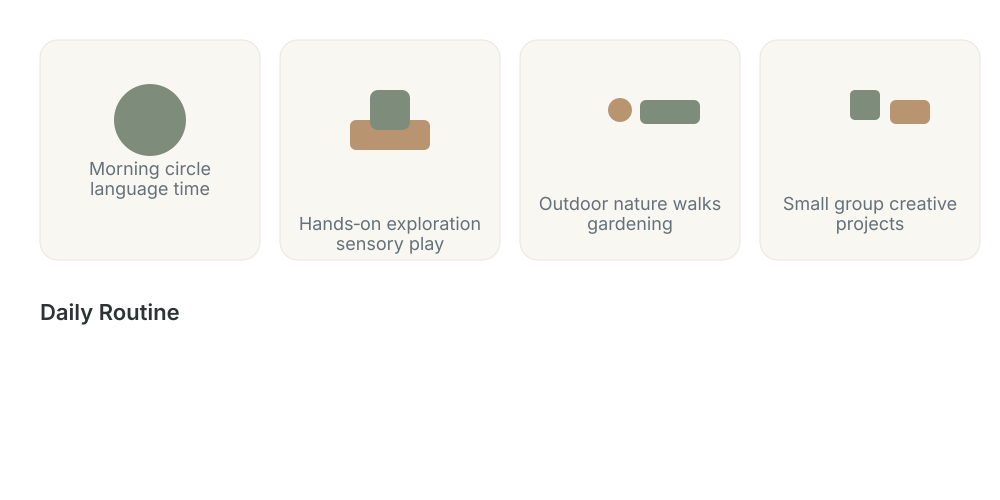
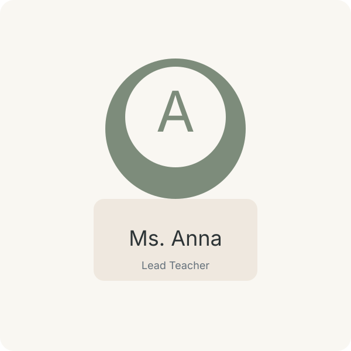

The Spirit of Kokoro
We teach with gentle structure — cultivating habit (Shitsuke), social connection, and sensory learning. Classrooms, materials, and daily rhythms are intentionally simple so children can focus on exploration, language, and self‑confidence.
Hands‑on Learning
Practical activities — pouring, sweeping, gardening — foster independence and fine motor skills.
Nature & Rhythm
Daily outdoor time, seasonal projects, and quiet reflection help children tune into the world around them.
Japanese Early Childhood Philosophy (0–6 years)
Japanese early childhood education (0–6 years) prioritizes holistic, child‑centered development, nurturing emotional, social, and character growth — often called kokoro no iku (education of the heart) — over early academic achievement. The approach emphasizes play‑based learning, empathy, group harmony, and developing "the power of living": independence, motivation, and resilience within a supportive community. [1, 2, 3, 4]
Core Philosophy and Principles
- Kokoro Noiku (Education of the Heart): Cultivating emotional regulation, empathy, kindness, and character rather than prioritizing academics.
- The Power of Living: Fostering motivation, independence, and resilience that underpin lifelong learning and social participation.
- Play‑Based Learning: Valuing play as children's voluntary activity for balanced cognitive and bodily development.
- Group‑Oriented Focus: Encouraging cooperation, mutual care, and a sense of community responsibility.
- Respect for the Child's Feelings: Following Sozo Kurahashi’s influence to honor short‑lived emotions (kokoro‑mochi) and engage from a second‑person perspective. [1–8]
Key Pedagogical Approaches
- Independence within Groups: Children gain autonomy while learning to live harmoniously with others.
- Mixed‑Age Education: Older children mentor younger ones, building empathy and leadership.
- Child‑Led Discovery: Teachers observe, document (diaries), and facilitate rather than direct every activity.
- Shiitsuke (Discipline): Proactive guidance to build positive habits, politeness, and social manners without punitive measures.
- Environmental Learning: Thoughtfully arranged materials and spaces invite voluntary creative engagement. [1, 7, 9, 10]
Key Daily Practices
- Daily Routines & Chores: Tasks like cleaning and serving meals teach responsibility and gratitude.
- Morning Talks: Group conversation time that builds listening skills and empathy.
- No Early Exams: Emphasis on social and emotional readiness in early years; formal academics are introduced later. [3, 4, 6, 9]
Framework Components
- Kindergartens: Typically for ages 3–6, serving as an educational bridge to elementary school.
- Daycare Centers: Care from infancy through school age, focusing on emotional growth and developmental milestones.
- Five Developmental Domains: Health, human relations, environment, language, and expression guide planning and assessment. [1, 11]
Key Philosophers and Concepts
- Sozo Kurahashi: Emphasized honoring the child's current emotional state (kokoro‑mochi) and responding empathetically rather than prioritizing future goals.
- Friedrich Froebel: His child‑centred ideas were adapted in Japan, supporting play‑based and empathetic pedagogy. [5, 12–14]
Curriculum
Our curriculum blends play, language immersion, and purposeful routines. Teachers are native English speakers who model rich, natural language throughout each day.
Daily Routine
- Morning circle & language time
- Hands‑on exploration and sensory play
- Outdoor nature walks and gardening
- Small group creative projects

Programs (Pre‑K only)
Small multi‑age classes designed for children aged 3–5. We offer morning and full‑day options with consistent teacher groups.
9:00 — 12:00 — play, circle, outdoor time.
9:00 — 3:00 — extended enrichment, rest, lunch, projects.
Small cohorts, rolling enrollment. Priority for waitlist applicants.
Native English Teachers
All lead teachers are native English speakers trained in child development and Japanese early childhood practices.

Ms. AnnaVisit & Enroll
Schedule a private tour to see our space, meet teachers, and experience a class in session. Tours are limited to small groups to preserve the calm atmosphere.